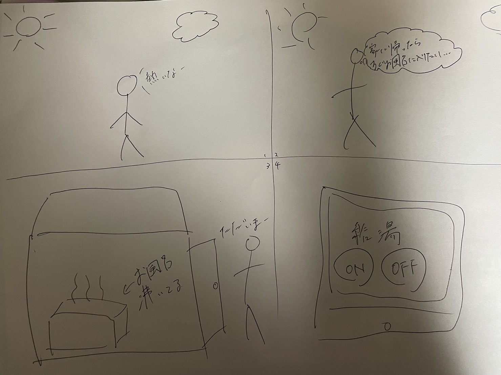

IoTについて考える
IoTとはなにか？
IoTは"Internet of Things"の略でモノのインターネットと訳されています。
IoT：Internet of Things（モノのインターネット）という言葉ができる以前、インターネットはコンピュータ同士を接続するためのものでした。
よって、従来は主にパソコンやサーバー等のIT関連機器が接続されていました。しかし、現在では新たにスマートフォンやタブレット端末も接続されています。
テレビやデジタルカメラ、デジタルレコーダーや最近話題のスマートスピーカー等のデジタル情報家電をインターネットに接続する流れは増加しています。
デジタル化された映像、音楽、音声、写真、文字情報や様々なデータがインターネットを介して伝達されるシーンが今後ますます増えて行くでしょう。
このように世界中に張り巡らされたインターネットはあらゆるモノがコミュニケーションをするための情報伝送路になりつつあります。
IoTで何ができそうか？
班で出た案

自分ののアイデア

スマホを使ってスマホを使って遠隔でお風呂を沸かすことができるというアイデアです。家に帰ってすぐにお風呂に入りたい。
でもお風呂が沸くのには時間がかかる。そんな時にこれを使うことで、家について30秒でお風呂にはいれるという画期的なサービスです。